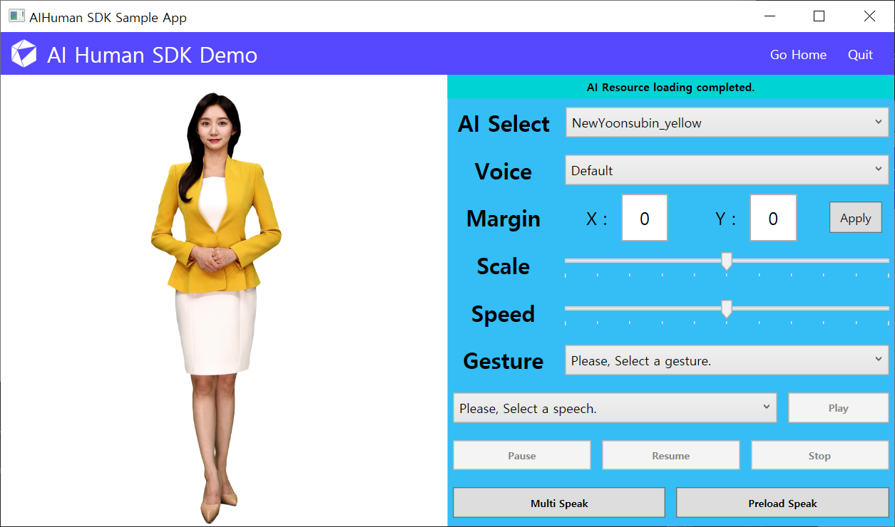

Introduction
Basic Concepts of AI Human (Video Conversation or AILive)
AI Human(previously called AILive) SDK can display a trained AI model that resembles real human on the screen in realtime. However, it goes beyond just realtime displaying the AI model. It even allows the AI to speak naturally as if in a video call. The most critical component of the SDK is AIPlayer.

AIPlayer is a View(UserControl) component where the AI model is displayed in real time and can be freely positioned. The AI within the AIPlayer was created by training the voice and facial expression of a real person. Therefore, it does not have any artificial sounds and is more natural than the previously existing TTS.
In addition, it is possible to select a variety of different models through AIPlayer. When an AI model is selected, the selected AI model in an Idle state is displayed on the screen after the loading process (user authentication and resource loading) as shown in the image above.
AI's Idle state is the state in which the AI is listening rather than speaking. In this state, the AI model is not static like the picture above, but is designed to resemble natural human motion as closely as possible by showing movements like blinking or nodding. AIPlayer has a simple structure where all these processes are automatically performed with simple settings.
The user can command the client (AIPlayer) in the Idle state to start speaking like 'Hi', 'How are you', etc. Upon receiving this command, the AI will naturally begin to speak, and when finished, it will naturally go back to the Idles state.
Users can also adjust the size, position, and speech rate of the AI. In addition, pause, resume, and stop functionalities are provided, which can be used to support variety of manipulations on the screen. AI models are available for Korean, English, Japanese, and Chinese, enabling multi-lingual support.